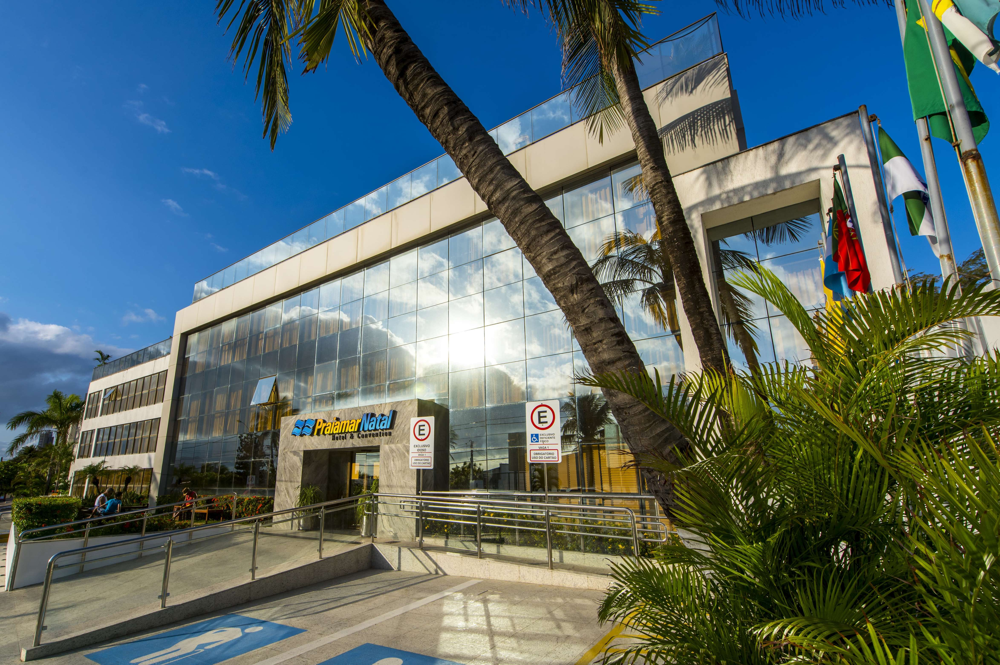

Aim and Scope
The ongoing transition towards an ICT-backed automated and interconnected industry has been named “Industry 4.0” and is commonly agreed to represent the fourth stage of industrialization, after the introduction of mechanization, electricity, and digitalization achieved through the first three industrial revolutions.
This fourth revolution heavily depends on most recent ICT paradigms (e.g., IoT as well as Cloud, Fog, and mobile-edge computing), integrated Cyber-Physical Systems, as well as Big Data Analytics techniques, and associated technologies.
Industry 4.0 is envisioned to potentially disrupt the overall industry scenario at several layers, (e.g., providing extensive automation, fostering cooperation among enterprises along a value chain, and even enabling the transition from a linear value chain to a more complex value network) thus leading to uncover new possibilities as well as raising new challenges. Novel approaches often require to heavily redesign the role of human operators. Together with the new possibilities provided by the aforementioned technological enablers of I4.0, a number of technical issues come, being the more important and limiting as they refer to autonomous machines, manufacturing processes, and value creation networks.
Important Dates
- Workshop paper submission deadline:
April 2nd, 2018April 16th, 201821st April, 2018 - Notification of workshop paper acceptance:
May 7th, 2018May 14th, 2018 (firm) - Submission of camera-ready workshop papers due:
May 14th, 2018May 24th, 2018 (firm) - Workshop early registration: May 17th, 2018 (firm)
Organizers
General Chairs
Program Chair

Technical Program Committee
- Diego Galar, Luleå University of Technology
- Domenico Ciuonzo, Università degli Studi di Napoli Federico II
- Giuseppe Aceto, Università degli Studi di Napoli Federico II
- Luigi Alfredo Grieco, Politecnico di Bari
- Marija Cundeva-Blajer, University of Skopje
- Elaheh Pourabbas, Institute of Systems Analysis and Computer Science "Antonio Ruberti"
- Hervé Panetto, University of Lorraine/TELECOM Nancy
- Gregory Zacharewicz, Université de Bordeaux
- Flavio Oquendo, IRISA (UMR CNRS) - University of South Brittany
- Tatjana Sibalija, Belgrade Metropolitan University
- Bruno Vallespir, Université de Bordeaux
- Francisco Vasques, Universidade do Porto
- Martin Wollschlaeger, Technische Universität Dresden
- Alessio Botta, Università degli Studi di Napoli Federico II
- Stefano Rinaldi, Università degli Studi di Brescia
Local Chairs
- Ivanovitch Medeiros Dantas da Silva, Federal University of Rio Grande do Norte, Natal, BR
- Luiz Affonso de Oliveira, Federal University of Rio Grande do Norte, Natal, BR
- Silvio Costa Sampaio, Federal University of Rio Grande do Norte, Natal, BR
Call for Paper
The goal of this workshop is to provide an inter-disciplinary platform for researchers to exchange ideas, present results, share experience, stimulate new research, and foster collaborations among researchers, professionals, and developers involved in the various aspects of ICTs for the evolving Industry 4.0, including back-end infrastructure such as the Cloud and Fog/Edge networks.
Improved versions of selected workshop papers will be invited for possible inclusion in a Special Issue of Wiley’s Internet Technology Letters.
Workshop topics include, but are not limited to:
- Communication/network infrastructures, architectures and protocols for Industry 4.0
- Wireless communications for Industry 4.0
- Quality of experience (QoE) with mobile services/applications
- Security, privacy and trust for Industry 4.0 services/applications
- Computing/storage infrastructures for Industry 4.0, such as clouds and virtualization
- Software, systems and performance engineering for Industry 4.0
- Narrowband technology
- 5G
- Augmented Reality and Virtual Reality
- Soft-SIM technology
- Power-efficient communication
- Artificial Intelligence for Industry 4.0
- Delay-tolerant, fault-tolerant and reliable communication
- ICTs for Industrial Robotics
- Industry networking, body area networking and cloud-integrated networking
- Smartphones in industrial applications
- Social Networking, Computing and Education in I4.0
- Cloud computing applications for Industry 4.0
- Internet of Things (IoT) applications for Industry 4.0
- Industrial Informatics
- Sensor-based industrial applications
- Proximity-based communication, group communication and social networks
- Software-defined networks and network management
- Network Function Virtualization
- Nanoscale/molecular communications
- Network coding and error detection/correction
- Resilience and robustness
- Ambient intelligence and pervasive computing
- 3D Printing
Submission Guidelines
All papers should be submitted via EDAS through >>this link<<. Authors are required to submit fully formatted, original papers (in PDF format), and should be no more than 6 pages (full papers) or 4 pages (short papers) in the IEEE double column proceedings format, including tables, figures and references. Papers exceeding 6 pages will not be accepted by EDAS. At least one author of each accepted paper is required to register to the workshop and present the paper. Only registered and presented papers will be published in the conference proceedings.
Improved versions of selected workshop papers will be invited for possible inclusion in a Special Issue of Wiley’s Internet Technology Letters.
Program
The workshop full program can be found >>here<< .

Venue
The workshop will be held at the Praiamar Natal Hotel & Convention , Natal, Brazil. Please refer to the Conference Venue and Travel Info on the IEEE ISCC 2018 website for any participating information including Workshop venue and travel.